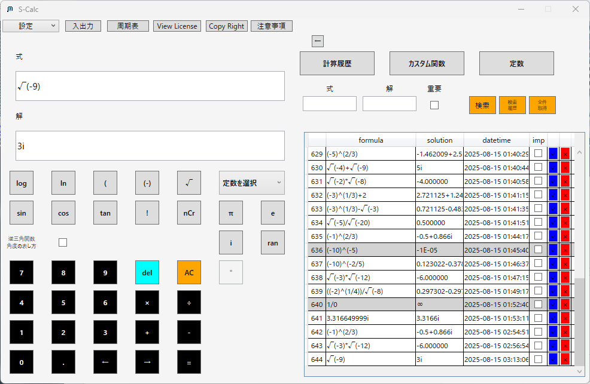
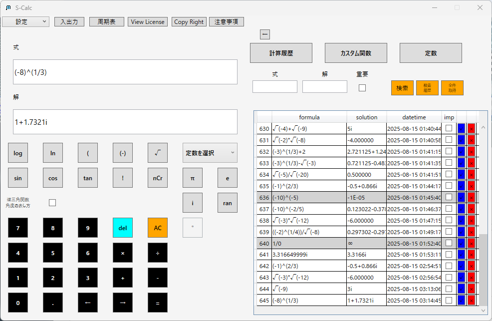
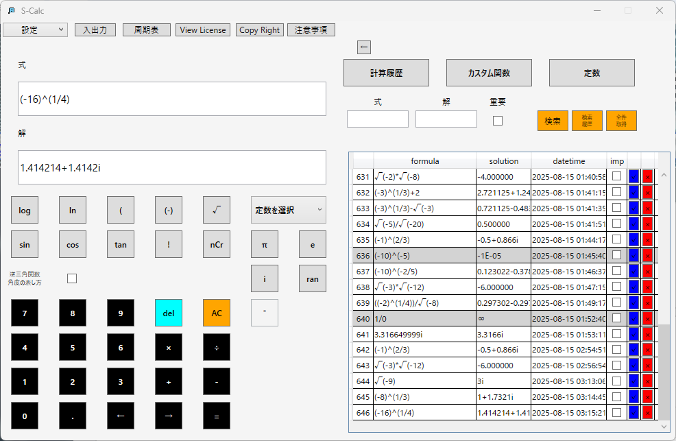

S-Calc よくある質問
インストール
機能
購入
販売箇所
Q: S-Calcの購入方法は？
A: 以下URLのMicrosoft Storeにて販売しております。
Q: S-Calcの対応OSは？
A: Windows 10, Windows 11に対応しています。
機能について
Q: カスタム関数の使い方は？
A: S-Calcではカスタム関数を登録し、簡単に呼び出すことができます。
Q: 計算履歴はどのように使えますか？
A: 計算履歴は自動保存され、後から再利用可能です。
Q: -e^(iπ) を入力したところ、答えが 1 ではなく 0 になってしまいます。これは不具合ですか？
A: 不具合ではありません。
S-Calcでは数式の解釈にxFuncというライブラリを使用しており、
-e^xのような式を(-e)^xとして解釈します。
そのため、-e^(iπ)は
本来の-(e^(iπ))=-(-1)=1ではなく、
(-e)^(iπ)≒0に近い複素数として計算されてしまいます。
これは多くのプログラムや電卓アプリに見られる仕様上の制限です。
回避方法
このような誤解を避けるため、括弧()を明示的に使用してください。
正しい例：
-(e^(iπ))→正しく「1」となります。
本来の-(e^(iπ))=-(-1)=1ではなく、
(-e)^(iπ)≒0に近い複素数として計算されてしまいます。
これは多くのプログラムや電卓アプリに見られる仕様上の制限です。
回避方法
このような誤解を避けるため、括弧()を明示的に使用してください。
正しい例：
-(e^(iπ))→正しく「1」となります。
Q: 複素数の計算結果が想定と違います。なぜですか？
A: S-Calcでは、複素数の累乗や根号を計算する際に「主値（principal value）」を採用しています。
複素数には複数の根が存在しますが、主値とは偏角（角度）が -π < θ ≤ π の範囲にある値を指します。
これにより、同じ式でも「実数解」ではなく複素数が表示されることがあります。
※ S-Calc は複素数の累乗・根で主値（-π < θ ≤ π）を返します。
複素数には複数の根が存在しますが、主値とは偏角（角度）が -π < θ ≤ π の範囲にある値を指します。
これにより、同じ式でも「実数解」ではなく複素数が表示されることがあります。
主値（Principal Value）の計算例
以下は S-Calc が返す 主値 の例です（小数は小数第5位で丸め）。
| 式 | 主値の結果 | 備考 |
|---|---|---|
(-9)^(1/2) |
3.0i |
純虚数の平方根 |
(-8)^(1/3) |
1+1.7321i |
実数解 -2 ではなく主値 |
(-16)^(1/4) |
1.4142+1.4142i |
偏角 45° の 4 乗根 |
(-27)^(1/6) |
1.5+0.866i |
偏角 30° の 6 乗根 |



購入に関する質問
Q: S-Calcの価格はいくらですか？
A: 価格はFullは3,950円、Liteは2,000円です。